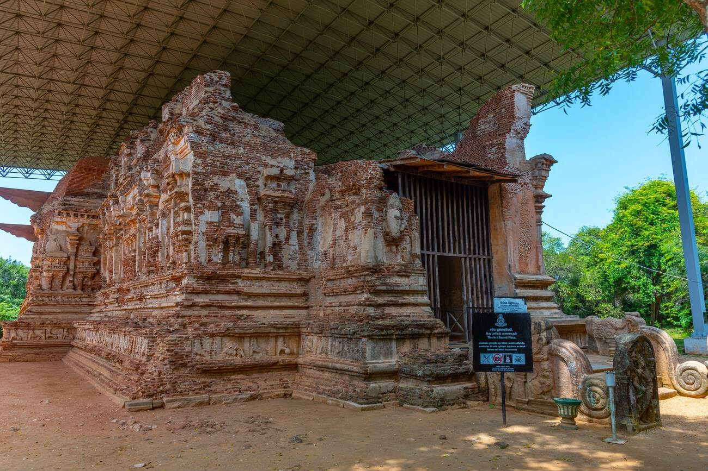
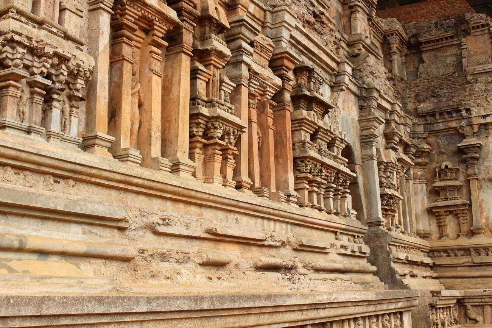
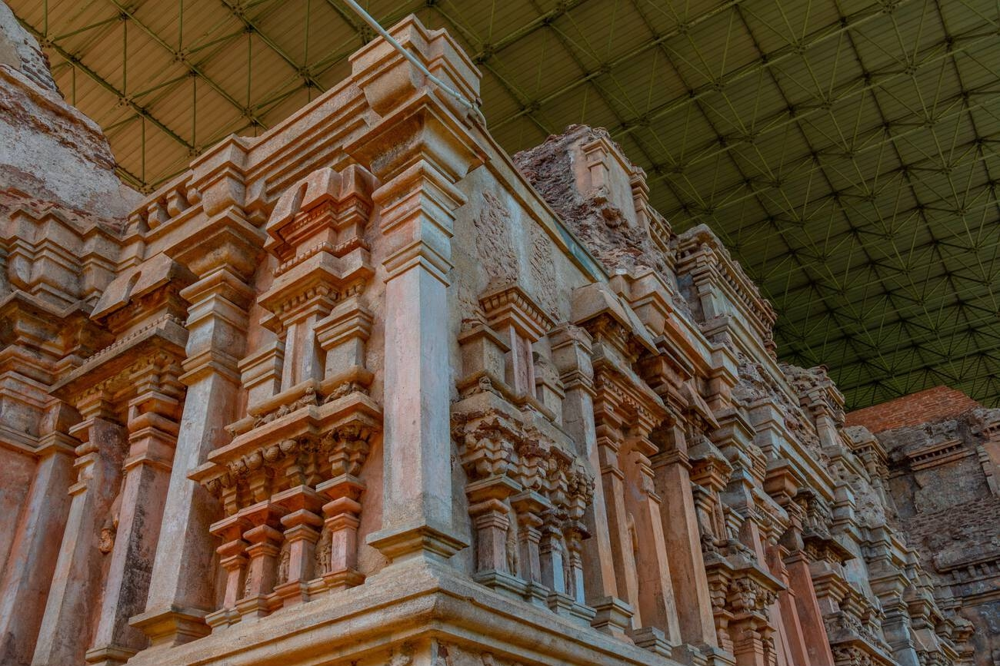
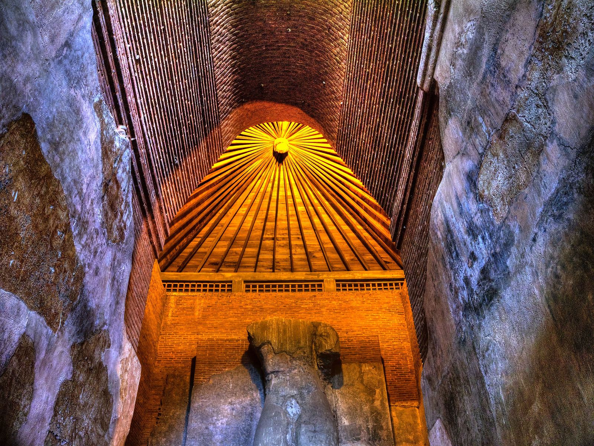
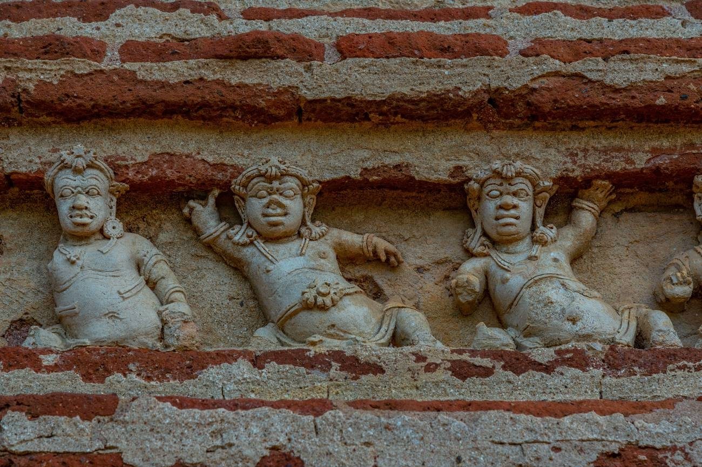
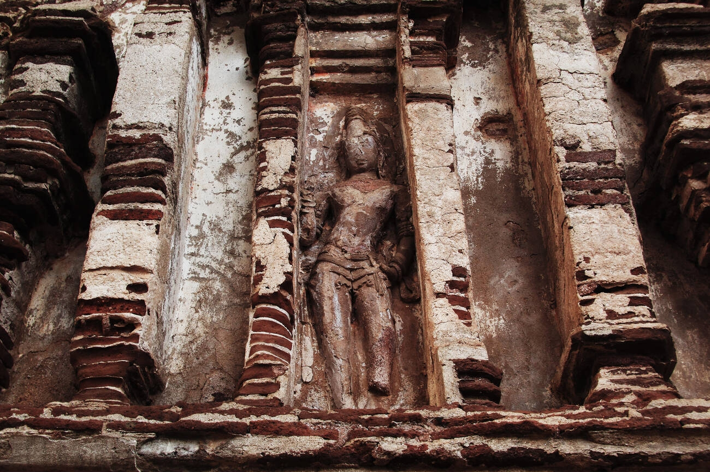
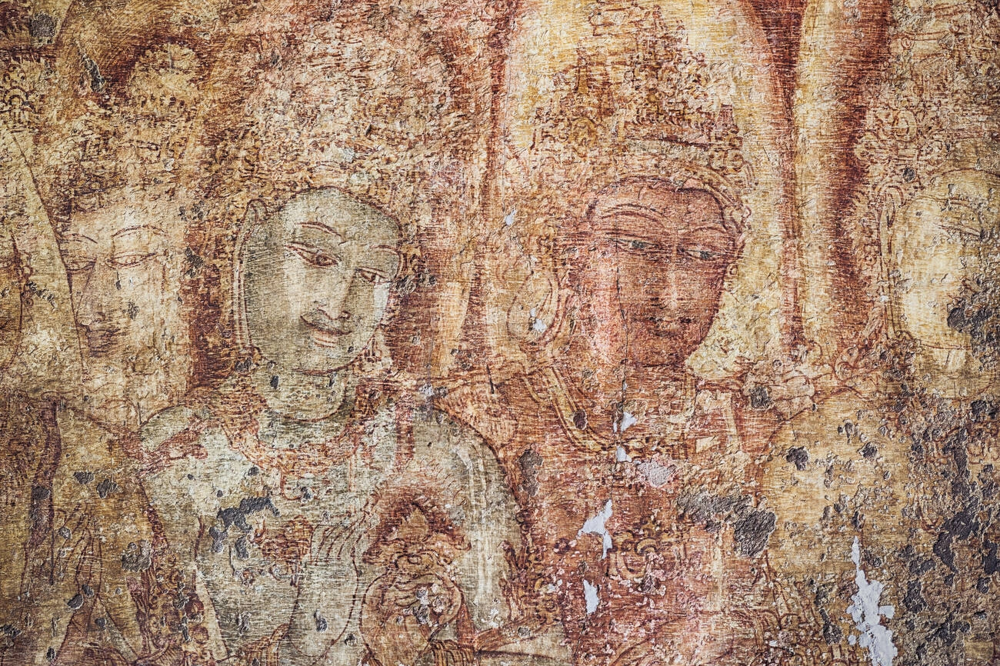
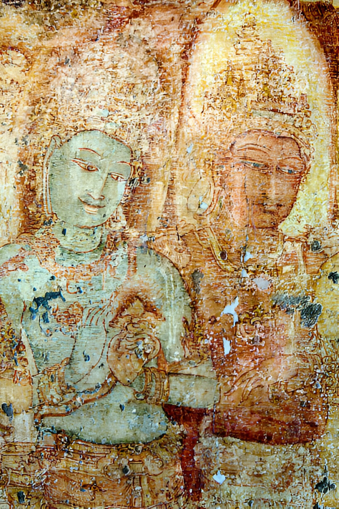
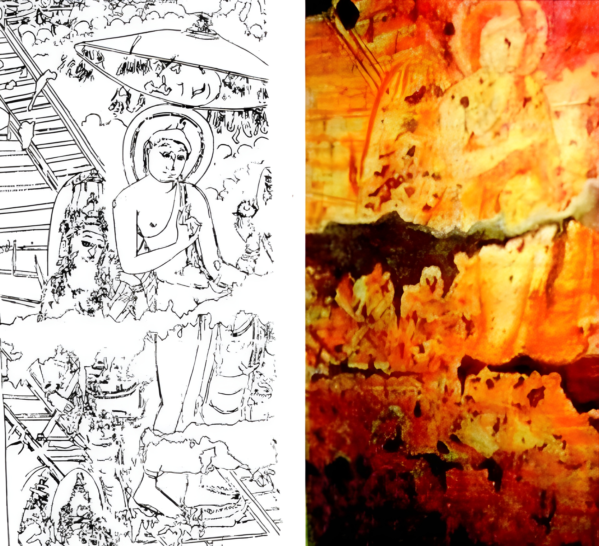
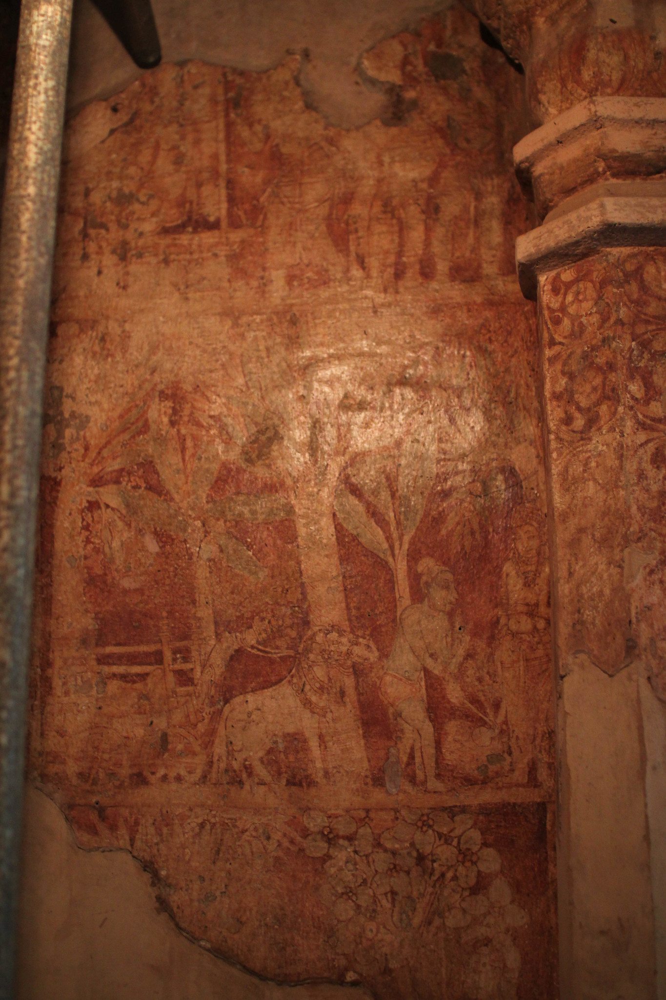

තිවංක පිළිම ගෙයි චිත්ර
- ක්රි. ව. 12 වැනි සියවසේ 1 වන පරාක්රමබාහු රජු විසින් ඉදිකරන ලද තිවංක පිළිමගෙය බෞද්ධ චිත්ර කලාවේ විශිෂ්ට නිර්මාණ සාධක පිළිබිඹු කරන පැරණි බෞද්ධ ගෘහ නිර්මාණයක් වේ.
- පොළොන්නරු යුගයේ හින්දු වාස්තු විද්යාත්මක ආභාසය සහිත ව නිර්මාණය වූ සුවිශේෂ බෞද්ධ ප්රතිමා මන්දිරයක් ලෙස මෙය හැඳින් වේ.
- පොළොන්නරු යුගයේ චිත්ර කලාව පිළිබඳ විශිෂ්ට සාධක මෙම ප්රතිමා ගෘහයෙන් හමු වේ.
- ශ්රී ලාංකේය චිත්ර කලා විකාශනයේ යුග දෙකක චිත්ර කලා ශෛලීය ලක්ෂණ මෙහි පිළිබිඹු කරයි.
- අන්තරාලයේ දක්නට ලැබෙන "දේවාරාධනාව" චිත්රය හා ගර්භ ගෘහයේ දැකිය හැකි "සංකස්ස පුරයට වැඩම කිරීම" නැමති සිතුවම් මුල් යුගයේ සිතුවම් ලෙස හඳින්වේ.
- ප්රවේශ මණ්ඩපයේ දැකිය හැකි බෝධිසත්ව චරිතය දැක්වෙන ජාතක කතා සිතුවම් පසු කලක කරන ලද චිත්ර ලෙස සැලකේ.
- ජාතක කතා චිත්ර අතර තේමිය ජාතකය, සස ජාතකය, අසංකවතී ජාතකය හා චුල්ල පදුම ජාතකය ප්රධාන තැනක් ගනියි.
- මුල්කාලීන චිත්ර ලෙස සැලකෙන ගර්භ ගෘහයේ හා අන්තරාලයේ සිතුවම් අනුරාධපුර චිත්ර කලා ලක්ෂණ පෙන්වයි.
- ප්රවේශ මණ්ඩපයේ දැක්වෙන පසුකාලීන සිතුවම් වන ජාතක කතා සිතුවම් මහනුවර චිත්ර සම්ප්රදායට සමාන ලක්ෂණ පෙන්වයි.
- තීරු චිත්ර සංරචනය, අඛණ්ඩ කථනය, පාර්ශ්වදර්ශී රූප, පසුබිම සඳහා රක්ත වර්ණය භාවිතය ජාතක කතා චිත්ර වල දැකිය හැකි සුවිශේෂ ලක්ෂණ වේ.
- තිවංක පිළිමගෙයි චිත්ර වියළි බදාමයක් මත ඇඳීමේ ශිල්ප ක්රමයකට නිර්මාණය කර ඇතැයි සැලකේ.
- ශ්රී ලාංකේය චිත්ර කලා ඉතිහාසයේ පසු සම්භාව්ය කලා සම්ප්රදායක ලක්ෂණ මෙම සිතුවම් වලින් පිළිබිඹු වන බව විද්වත් අදහසයි.






දේවාරාධනාව චිත්රය
- මෙම සිතුවම තිවංක පිළිමගෙයි අන්තරාලය නම් වාස්තු විද්යා කොටසේ දක්නට ලැබේ.
- මෙම සිතුවමින් තව්තිසා දෙව්ලොව විසූ බෝසතුන්ට මනුලොව උපත ලබන ලෙස දෙවියන් විසින් කරන ලද ආරාධනය නිරූපණය කරයි.
- අලංකාර වස්ත්රාභරණයන්ගෙන් සැරසී සිටින බොහෝ දේව රූ ප්රමාණයක් අන්තරාල බිත්ති පුරා දක්වා ඇති අතර ඒවා සැබෑ මානව රූප ප්රමාණයට වඩා විශාල වේ.
- නමස්කාර හා මල් ඉසින ස්වරූපයෙන් නිරූපිත දේවරූප බොහොමයක් රන්වන් පාටින් දක්වා ඇති අතර නිලට හුරු ලා කොළපාටින් යුතු ශරීර ඇති දේවරූප වෙයි. එය බොහෝ විට අජන්තා පද්මපානි බෝසත් රූපයට සමාන ලක්ෂණ පෙන්වයි.
- වර්ණ ගැන්වීම සඳහා රතු, දුඹුරු සහ කහ වර්ණ බහුල වශයෙන් භාවිත කර තිබීම දැකිය හැකි ය.
- චිත්රමය අවකාශය මත සංකීර්ණ ලෙස රූප සම්පිණ්ඩනය කර තිබීම මෙම නිර්මාණවල දැකිය හැකි සුවිශේෂත්වයකි.


බුදුන් සංකස්ස පුරයට වැඩම කිරීම චිත්රය
- සංකස්ස පුරයට වැඩම කිරීම යන සිතුවම ප්රතිමාව සඳහා සැකසුණු ගර්භ ගෘහයේ දක්නට ලැබේ.
- බුදුන්වහන්සේ මාතෘ දිව්ය රාජයාට දම් දෙසනු පිණිස තව්තිසා දෙව්ලොවට වැඩම කර නැවත සක්දෙවි රජු විසින් මවන ලද රන් හිණිම`ගින් සංකස්ස පුරයට වැඩම කිරීම යන අවස්ථාව මින් පිළිබිඹු කෙරේ.
- විශාල තලයක් පුරා මෙම අවස්ථාව සංරචනය කර ඇති අතර එහි බුදුන්ගේ රූපය මානව ප්රමාණයට වඩා විශාලව නිරූපණය කර ඇත.
- මුල්කාලීන ව නිර්මාණය කර ලද චිත්ර ලෙස සැලකෙන මෙම සිතුවම් අනුරාධපුර චිත්ර කලා ලක්ෂණ පෙන්වයි.
- වර්ණ ගැන්වීම සඳහා රතු, දුඹුරු සහ කහ වර්ණ බහුල වශයෙන් භාවිත කර තිබීම දැකිය හැකි ය.
- දේවාරාධනය සිතුවමට සමාන ශෛලීය ලක්ෂණ හා වර්ණ භාවිතය මෙම සිතුවමින් ද දැකිය හැකි ය.

තේමීය ජාතකය
- තේමීය ජාතකයේ බෝධිසත්ව චරිතය දැක්වෙන සුවිශේෂ සිතුවම් කොටසක් ලෙස මෙම සිතුවම හැඳින්විය හැකි ය.
- ජාතක කතා සිතුවම් දක්නට ලැබෙන මණ්ඩපය නම් වාස්තුවිද්යා අංශයේ ඉතා පැහැදිලිව පෙනෙන සිතුවම් කොටසක් ලෙස මෙම සිතුවම හඳුනාගත හැකි වේ.
- මෙම සිතුවමින් අස්ව රථයෙහි අත් පා නොසෙල්වා සිටින තේමිය කුමාරයත්, වළක් හැරීමට සැරසෙන සුනන්ද නම් වු රථාචාරියාත්, ඔහුට ඉදිරිපසින් බෝධිසත්ව විලාසයෙන් සිටින තේමීය කුමාරයාත් දැක්වේ.
- වර්ණ ගැන්වීම සඳහා ගුරු, දුඹුරු සහ කහ වර්ණ බහුල වශයෙන් භාවිත කර තිබීම දැකිය හැකි ය.
- මෙම නිර්මාණවල ශෛලීය ලක්ෂණ මහනුවර චිත්ර සම්ප්රදායට සමාන ලක්ෂණ පෙන්වයි.
- තීරු චිත්ර සංරචනය, අඛණ්ඩ කථනය, පාර්ශ්වදර්ශී රූප, පසුබිම සඳහා රක්ත වර්ණය භාවිතය මෙම චිත්රවල දැකිය හැකි සුවිශේෂ ලක්ෂණ වේ.
